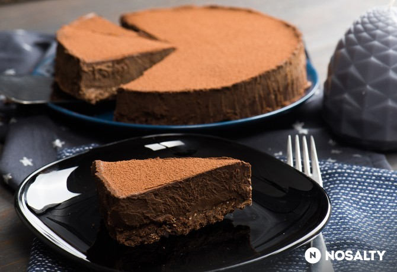

Torták receptei
A legjobb torták egy helyen
A leggyorsabb csokitorta
Tömör gyönyör
A legegyszerűbb és a leggyorsabb csokitorta, aminek egyetlen titka van: nem szabad túlsütni!
Hozzávalók / 8 adag
- 180 g cukor
- 150 g olvasztott vaj
- 40 g cukrozatlan kakaópor
- 1 csipet só
- 1 teáskanál vanília kivonat
- 2 db tojás
- 260 g finomliszt
Elkészítés
- A cukort, az olvasztott vajat, a kakaóport, egy csipet sót és a vaníliakivonatot egy tálba öntjük, majd habverővel alaposan összekeverjük.
- Egyenként eldolgozzuk benne a tojásokat.
- Hozzáadjuk a lisztet, és csomómentesre keverjük.
- A tésztát kivajazott és kilisztezett formába öntjük, majd 180 fokra előmelegített sütőben 12-14 percig sütjük.
- Porcukorral megszórva, gyümölcsökkel vagy vaníliafagyival is tálalhatjuk, de tortaalapnak is kiváló.
Csupa csoki torta (sütés nélkül)
Egyszerűen nagyszerű

Vigyázat, csoki túladagolás! :) Csokis zabkeksz alap, tripla csokis tejszínes krém, és már kész is. Ez a mi kedvenc csupa csoki tortánk, sütés nélkül! :)
Hozzávalók / 10 adag
- 200 g csokis zabkeksz
- 50 g olvasztott vaj
- 1.5 ek cukrozatlan kakaópor
- 50 g étcsokoládé (fél tábla)
- 400 ml habtejszín
- 2 ek vaj
- 300 g étcsokoládé (3 tábla)
- 1 ek cukrozatlan kakaópor (a tetejére)
Elkészítés
- Egy aprítógépbe dobjuk a zabkekszeket, az olvasztott vajat és a kakaóport, majd ledaráljuk. Hozzáadjuk a fél tábla étcsokit, és darabosra daráljuk.
- Egy sütőpapírral bélelt, csatos tortaformába öntjük a csokis masszát, és jól lenyomkodjuk. Legalább 30 percig a hűtőben pihentetjük.
- Egy edénybe felforraljuk a tejszín-vaj-étcsoki triót, majd lehűtjük.
- A lehűlt csokis krémet, a kekszes alapra öntjük, majd hűtőben pihentetjük néhány óráig.
- Tálalás előtt egy evőkanál kakaóporral szórjuk meg a torta tetejét!
Szivárvány torta fehércsokis krémmel
Sokszínű
2. házassági évfordulónkra sütöttem a tortát. Igaz, hogy nem a leggyorsabban elkészíthető torta, és sok benne az ételszínező, de azt hiszem, különleges alkalmakkor ez mind megengedett. Tényleg megérte a fáradságot, mert nem csak mutatós lett, hanem nagyon finom is:-)!
Hozzávalók / 12 adag
Piskótához
- 12 db tojás
- 12 csapott ek finomliszt
- 3 kávéskanál ételfesték (színenként, piros, kék, zöld, lila, narancs és citromsárga ételszínező)
- 12 ek cukor
A krémhez
- 25 dkg mascarpone (krémsajt)
- 0.5 l növényi habtejszín (habtejszín)
- 20 dkg fehér csokoládé
- 2 csomag habfixáló
Elkészítés
- Elkészítjük a 2 tojásos piskótákat. A narancs, citrom, lila és piros piskótákat sütjük ki először.
- Piskóta: 2 tojásfehérjét habbá verjük egy csipet sóval. Majd a két tojássárgáját 2 kanál kristálycukorral habbá verjük, és hozzáadunk 2 kanál lisztet, majd óvatosan hozzáadjuk a habbá vert fehérjét. Végül a színezőt öntjük bele, amíg el nem érjük a tetszés szerinti színt.
- Kivajazott-lisztezett tortaformába öntjük és megsütjük. Így sütjük ki a piskótákat egyenként, szín szerint. A kék és zöld színű piskótáknál a tojások sárgáját kihagyjuk a szebb szín érdekében.
- Ha megsültek a piskóták, hagyjuk kihűlni őket, és közben elkészítjük a krémet.
- A fehér csokoládét gőz fölött megolvasztjuk, langyosan a mascarpone sajthoz keverjük.
- A Hulalát a habfixálókkal kemény habbá verjük, és óvatosan összekeverjük a csokis-mascarponéval.
- Végül a piskótákat tetszés szerint sorakoztatva megkenjük a krémmel.
- A külsejére tegyünk félre a krémből, és vonjuk be vele a tortát.